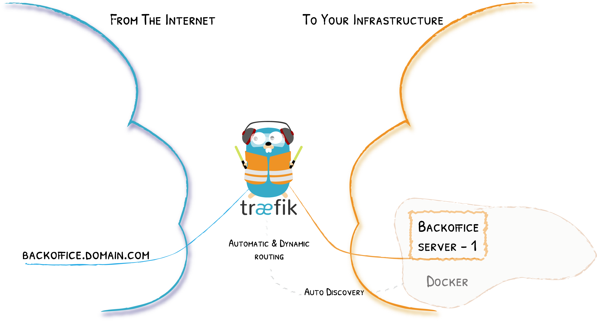
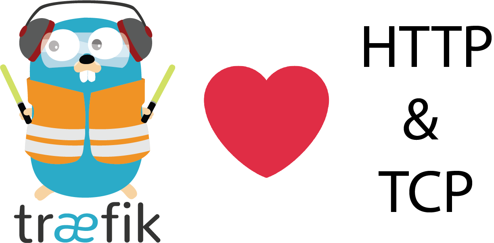

Edge Routing and HTTPS for Everyone
Traefik in Action!

How to use these slides?
Browse the slides: Use the arrows
Change chapter: Left/Right arrows
Next or previous slide: Top and bottom arrows
Overview of the slides: keyboard’s shortcut "o"
Speaker mode (and notes): keyboard’s shortcut "s"
Whoami
Michael Matur
Devops & Developer @ Containous
Blacksmith on Traefik
Containous
We Believe in Open Source
We Deliver Traefik
Commercial Support for Traefik
22 people, 80% technical experts
Why Traefik?

Why, Mr Anderson?
Evolution of Software Design

The Premise of Microservices…

…and What Happens

Where is the Service?

Tools of the Trade


What If I Told You?
That You Don’t Have to Write This Configuration File…?
Here Comes Traefik!
Traefik Project
MIT License
Written in Go, a popular language
22,000+ ⭐
700M+ ⬇️
350+ üë∑
Traefik Core Concepts
Remember the Diagram?
Let’s Simplify

Providers
Entrypoints
Backends
Frontends

In Practice
Show Me the Configuration!
Keep it Simple
With üê≥:
entrypoint:
image: traefik:v1.7
command:
- "--docker"
- "--docker.domain=mycompany.org"
- "--acme.email=ssl-admin@mycompany.org"
- "--acme.httpChallenge.entryPoint=http"
# Or you could use a TOML file with "--configFile=/etc/traefik/traefik.toml
volumes:
- /var/run/docker.sock:/var/run/docker.sockHTTPS for Everyone with Let’s Encrypt
TLS, DNS and HTTP challenges supported
Demo
Traefik with ⎈
Diagram from https://medium.com/@geraldcroes
Did you say YAML?
apiVersion: extensions/v1beta1
kind: Ingress
metadata:
annotations:
# kubernetes.io/ingress.class: 'nginx'
kubernetes.io/ingress.class: 'traefik'
spec:
rules:
- host: mycompany.org
http:
paths:
- path: "/whoami"
backend:
serviceName: whoami
servicePort: 80We Missed Talking About …
The Herd
You came to the wrong neighbour
Traefik comes in Herd
As Simple As Traefik
Install it:
# Cluster Installation
traefikeectl install \
--licensekey="SuperSecretLicence" \
--dashboard \
--kubernetes # Or --swarmConfigure it:
# Routing Configuration, same as Traefik's
traefikeectl deploy \
--acme.email=ssl-admin@mycompany.org
--acme.tlsChallenge
...Free Trial
Revamped Documentation
Clarified Concepts
Expressive Routing Rule Syntax
# Send both requests to backend service:
# https://api.mycompany.com/v2
# https://api-v2.mycompany.com
rule=(Host('api.mycompany.com') && PathPrefix('/v2')) || Host('api-v2.mycompany.com')Middlewares

Quick Glance
[entrypoints]
[entrypoints.web-secure]
address = ":443"[http]
[http.routers.to-service-1]
rule = "Host(`demo.containous.cloud`)"
service = "service-1"
[http.routers.to-service-1.tls] # terminates the tls connection at HTTP[tcp]
[tcp.routers.to-service-2]
rule = "HostSNI(`demo.containous.cloud`)"
service = "service-2"
[tcp.routers.to-service-2.tls] # terminates the tls connection at TCP[tcp.routers.to-service-3]
rule = "HostSNI(`demo.containous.cloud`)"
service = "service-3"
[tcp.routers.to-service-3.tls]
passthrough = true # sends encrypted data "as is" to service-3And so Much More…
Learn more on the blog post
Call for contribution: Grab it, Try it, and give us your feedback!
We have
stickers!
We are hiring!
docker run -it containous/jobsThank you!